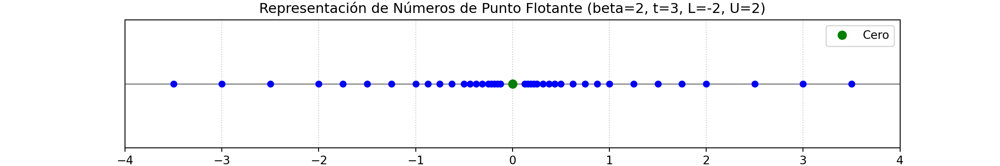
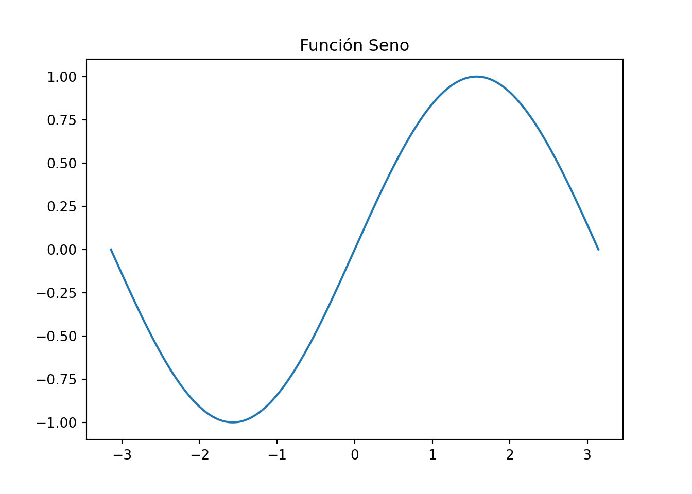

El análisis numérico proporciona métodos computacionales para el estudio y solución de problemas matemáticos. Debido a que muchos cálculos son realizados en computadores digitales, es conveniente la discusión para la implementación de los métodos numéricos como programas de computador.
Los resultados numéricos están influenciados por muchos tipos de errores, los cuales pueden ser catalogados a grandes rasgos en tres tipos básicos:
\[ x=\tilde{x}+E \]
\[ E_a = |x - \tilde{x}| \]
\[ E_r =\dfrac{|E_a|}{|x|} = \dfrac{|x - \tilde{x}|}{|x|} \]
Observaciones:
Mirando los ejemplos anteriores, vemos que los errores absolutos dependen de las magnitudes de los valores \(x\): en el primer ejemplo los errores absolutos son de orden de \(10^{−1}\); en cambio, en el segundo, son del orden de \(10^{−9}\).
En cambio, los errores relativos no se ven afectados por dichas magnitudes. Por dicho motivo, si queremos estudiar los errores sin tener en cuenta el orden de los valores \(x\), hay que usar los errores relativos. Vemos que en los dos ejemplos los errores relativos son del orden de \(10^{−4}\). ya que recordemos que las aproxi9maciones son a 4 cifras decimales significativas.
\[E_r<0.5\times10^{-t} \Rightarrow \dfrac{|x - \tilde{x}|}{|x|} < 0.5 \times 10^{-t}\]
Sea \(\tilde{x} = 3.1416\) una aproximación al valor \(\pi\), y \(x = 3.1415927\) una mejor aproximación.
import math
import string
from decimal import Decimal
def redondear(N,signif):
"""
Dado un número real N y un número determinado de cifras significativas signif,
nos da la aproximación de este número con signif cifras significativas.
Parámetros:
* N: número decimal
* signif: número de digitos representativos
Valor de retorno
* número redondeado a signif número de cifras significativas
"""
if int(N)==0:
return float(round(Decimal(str(N)),signif))
else:
return float(round(Decimal(str(N)),signif-1-int(math.log(abs(N),10))))
def Err(num,dig):
"""
Dado un número real y un número determinado de cifras significativas,
nos da el error absoluto y relativo de dicho número.
Parámetros:
* num: número decimal
* dig: número de cifras significativas
Valor de retorno
* Error absoluto
* Error Relativo
"""
err_abs=abs(num-redondear(num,dig))
err_rel=err_abs/abs(redondear(num,dig))
print("El error absoluto es {}".format(err_abs))
print("El error relativo es {}".format(err_rel))
return (err_abs, err_rel)
Err(3.1415927,5)## El error absoluto es 7.300000000043383e-06
## El error relativo es 2.3236567354352506e-06
## (7.300000000043383e-06, 2.3236567354352506e-06)\[ \begin{align*} E_a & = |x - \tilde{x}| = |3.1415927 - 3.1416| = 0.0000073 \\ E_r & = \dfrac{|E_a|}{|x|} = \dfrac{0.0000073}{3.1415927} \approx 0.232 \times 10^{-5}< 0.5 \times 10^{-5} \end{align*} \] Luego, \(\tilde{x}\) aproxima a \(\pi\) con 5 cifras significativas.
Sea \(x = a_n\ldots a_0.b_1b_2\ldots \in \mathbb{R}\) (En cualquier base), para aproximar hasta el \(t\)-ésimo decimal:
\[ \tilde{x}_{trunc} = a_n\ldots a_0.b_1b_2\ldots b_t \]
\[ \tilde{x}_{redon} = \begin{cases} a_n\ldots a_0.b_1b_2\ldots b_t & \text{si } b_{t+1} < 5 \\ a_n\ldots a_0.b_1b_2\ldots b_t + \beta^{-t} & \text{si } b_{t+1} \geq 5 \end{cases} \]
\[x = \sigma (0.d_1d_2\ldots d_t)_{\beta} \times \beta^e\]
donde:
\[ 2(\beta - 1)\beta^{t-1}(U - L + 1) + 1 \]
números diferentes (incluyendo el cero), y donde los distintos de cero están en forma normalizada.
\[2(2 - 1)2^{3 - 1}(2 - (-2) + 1) + 1 = 41\]
números diferentes (incluyendo el cero). La lista completa de números en \(F\) es:
import numpy as np
import matplotlib.pyplot as plt
def generar_punto_flotante(beta, t, L, U):
numeros = set()
for signo in [1, -1]:
for exponente in range(L, U + 1):
for d1 in range(1, beta):
for d2 in range(beta):
for d3 in range(beta):
numero = signo * (d1 * beta**(-1) + d2 * beta**(-2) + d3 * beta**(-3)) * (beta ** exponente)
numeros.add(round(numero, 10)) # Redondear para evitar problemas de precisión
numeros.add(0) # Incluir el cero
return sorted(numeros)
# Parámetros del sistema de punto flotante
beta = 2 # Base (binaria)
t = 3 # Dígitos de la mantisa
L = -2 # Exponente mínimo
U = 2 # Exponente máximo
punto_flotante = generar_punto_flotante(beta, t, L, U)
print("Números en el conjunto de punto flotante F:{}".format(punto_flotante))## Números en el conjunto de punto flotante F:[-3.5, -3.0, -2.5, -2.0, -1.75, -1.5, -1.25, -1.0, -0.875, -0.75, -0.625, -0.5, -0.4375, -0.375, -0.3125, -0.25, -0.21875, -0.1875, -0.15625, -0.125, 0, 0.125, 0.15625, 0.1875, 0.21875, 0.25, 0.3125, 0.375, 0.4375, 0.5, 0.625, 0.75, 0.875, 1.0, 1.25, 1.5, 1.75, 2.0, 2.5, 3.0, 3.5]# --- Visualización de la Recta Real y los Puntos ---
plt.figure(figsize=(12, 2)) # Ajusta el tamaño de la figura (ancho, alto)
# Dibuja la recta real (una línea horizontal)
plt.axhline(0, color='gray', linestyle='-', linewidth=1)
# Dibuja los puntos generados sobre la recta 'o' para los marcadores, 'b' para el color azul, markersize para el tamaño
plt.plot(punto_flotante, np.zeros_like(punto_flotante), 'ob', markersize=5)
plt.plot(0, 0, 'go', markersize=7, label='Cero') # 'go' = green circle
# Etiquetas y Título
plt.title(f'Representación de Números de Punto Flotante (beta={beta}, t={t}, L={L}, U={U})')
plt.xlabel('Recta Real')
# Ajustes de los ejes para que los puntos sean más visibles
min_val = min(punto_flotante) - 0.5
max_val = max(punto_flotante) + 0.5
x_limits = plt.xlim(min_val, max_val) # Extiende ligeramente los límites del eje X
yticks = plt.yticks([]) # Oculta las marcas del eje Y, ya que solo es una recta horizontal
# Muestra una leyenda si es necesario
plt.legend()
plt.grid(True, linestyle=':', alpha=0.7)
plt.show()
Vamos a ver cómo se almacena un número real en el ordenador en formato binario usando 64 bits.
Sea \(x\) un número real que suponemos en formato binario.
Escribimos \(x\) de la forma siguiente:\[ x=(−1)^s 1.f\times2^{c−1023}, \]
donde
\[ f= f_1f_2f_3\ldots f_n, \quad f_i \in \{0,1\} \]
\[ |s| f_1f_2\ldots f_n| e_1e_2\ldots e_m| \]
Representar el número \(x=31.53173828125\) en formato de punto flotante de 64 bits. \[ \begin{align*} 1. & \text{ Determinar el signo } s: \text{ Como } x > 0, \text{ entonces } s = 0. \\ 2. & \text{ Convertir } x \text{ a binario: } \\ & \quad \text{Parte entera: } 31_{10} = 11111_2. \\ & \quad \text{Parte fraccionaria: } 0.53173828125_{10} = 0.10001000001_2. \\ & \quad \text{Por lo tanto, } x \text{ en binario es aproximadamente } 11111.10001000001_2. \\ 3. & \text{ Normalizar el número: } \\ & \quad 11111.10001000001_2. = 1.111110001000001_2 \times 2^4. \\ 4. & \text{ Determinar la mantisa } f: \\ & \quad f = 111110001000001 \\ 5. & \text{ Determinar el exponente } c - 1023: \\ & \quad c = 4 + 1023 = 1027. \\ & \quad \text{Convertir } 1027 \text{ a binario: } 1027_{10} = 10000000011_2. \\ 6. & \text{ Representar el número en formato de 64 bits: } \\ & \quad |0|111110001000001|10000000011|. \\ \end{align*} \] Como sólo tenemos 64 bits para representar el número, la cantidad de bits usados para su representación no puede superar 64
En caso que los superase, tendremos que considerar una aproximación del mismo.
En el ejemplo se usado el número siguiente de bits:
en total, 27 bits, por tanto, sí sería posible su representación exacta y no haría falta considerar una aproximación del mismo.
Hagamos la conversión contraria.
Imaginemos que nos dan el número siguiente: \[ |1| 101101110011| 1111|. \] Vamos a ver a qué número \(x\) corresponde.
El signo es negativo, por tanto \(x<0\)
La mantisa será: \[ 1.f=1+\frac{1}{2}+\frac{1}{2^3}+\frac{1}{2^4}+\frac{1}{2^6}+\frac{1}{2^7}+\frac{1}{2^8}+\frac{1}{2^{11}}+\frac{1}{2^{12}}=1.7155762. \] El exponente \(c\) vale \(1111_{2}−1023=1+2+2^2+2^3−1023=−1008\).
El número será: \[ x=−1.7155762\times2^{−1008} \approx −6.25424\times10^{−304}. \]
\[ \begin{align*} x \oplus y & = fl(fl(x) + fl(y))\\ x \ominus y & = fl(fl(x) - fl(y))\\ x \otimes y & = fl(fl(x) \times fl(y))\\ x \oslash y & = fl(fl(x)/fl(y)) \end{align*} \]
\[ \left|\dfrac{x-fl(x)}{x}\right| \leq \mu \]
\[ 1.0+\epsilon \neq 1.0 \quad \text{(en la máquina)} \]
# Definición de una función para calcular el épsilon de la máquina
def calcular_epsilon_maquina():
"""
Calcula el épsilon de la máquina (el número más pequeño tal que 1 + eps > 1).
"""
epsilon = 1.0
# Mientras 1.0 + epsilon sea reconocido como igual a 1.0,
# dividimos epsilon a la mitad.
while 1.0 + epsilon > 1.0:
epsilon /= 2.0
# La última división hace que 1.0 + epsilon ya no sea > 1.0.
# Por lo tanto, el verdadero épsilon es el valor anterior (el doble).
return epsilon * 2.0
# Ejecutar la función y mostrar el resultado
epsilon_calculado = calcular_epsilon_maquina()
print("---")## ---print(f"Épsilon de la máquina (calculado): {epsilon_calculado}")## Épsilon de la máquina (calculado): 2.220446049250313e-16print(f"En notación científica: {epsilon_calculado:.2e}")## En notación científica: 2.22e-16print("---")## ---# Comprobación de la definición:
# 1 + épsilon
print(f"Comprobación (1 + Épsilon): {1.0 + epsilon_calculado}")## Comprobación (1 + Épsilon): 1.0000000000000002# 1 + épsilon / 2 (debería ser igual a 1)
print(f"Comprobación (1 + Épsilon / 2): {1.0 + epsilon_calculado / 2.0}")## Comprobación (1 + Épsilon / 2): 1.0NumPy (Numerical Python) es la librería esencial para el curso. Proporciona estructuras de datos eficientes (arrays) y funciones optimizadas para realizar operaciones de Álgebra Lineal.
Creación de un Array:
# Bloque de código Python
import numpy as np
# Crear un array de 1 a 5
a = np.array([1, 2, 3, 4, 5])
print(a)## [1 2 3 4 5]print(a * 2) # Operación vectorial## [ 2 4 6 8 10]Utilizaremos Matplotlib para graficar funciones, errores y visualizar resultados de nuestros métodos.
Gráfico de una Función Simple:
# Bloque de código Python
import matplotlib.pyplot as plt
x = np.linspace(-np.pi, np.pi, 200)
y = np.sin(x)
plt.plot(x, y)
plt.title("Función Seno")
plt.show()
Antes de codificar, debemos entender la fuente de nuestros errores:
Revisamos el concepto de convergencia. Muchos métodos numéricos son iterativos y solo son válidos si la secuencia de soluciones se aproxima a la respuesta verdadera. Recordamos la definición de límite:
\[ \lim_{n \to \infty} x_n = x_{verdadera} \]
Última revisión: 24 de October, 2025